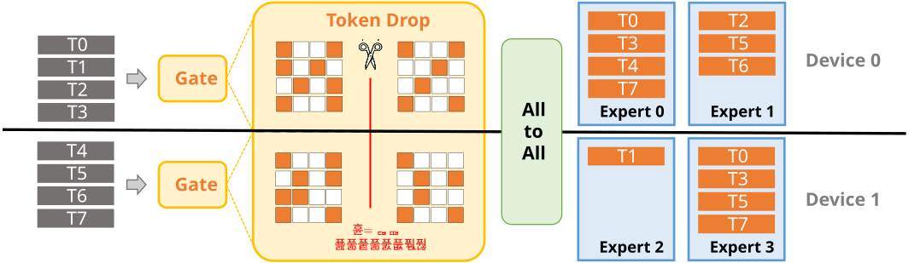
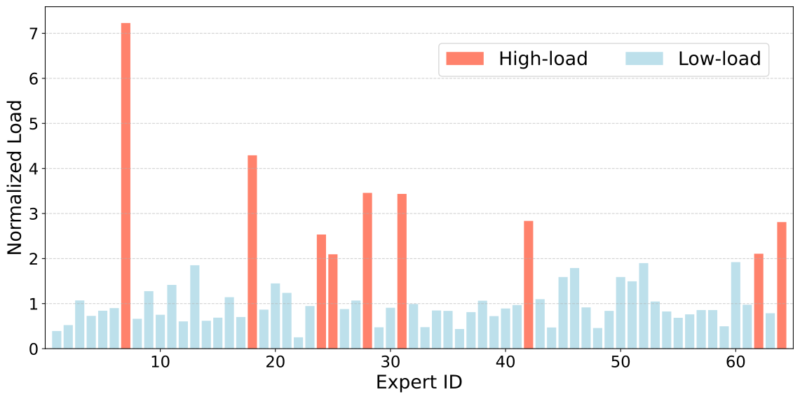
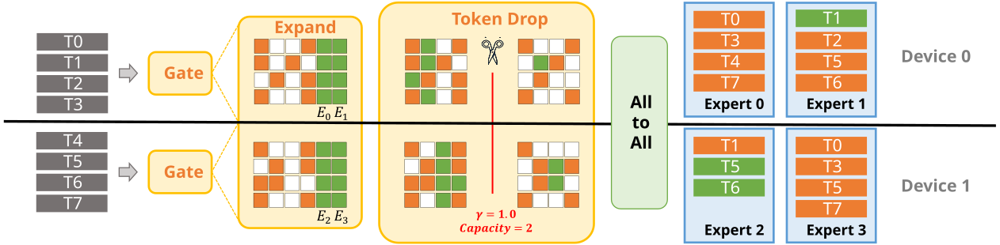
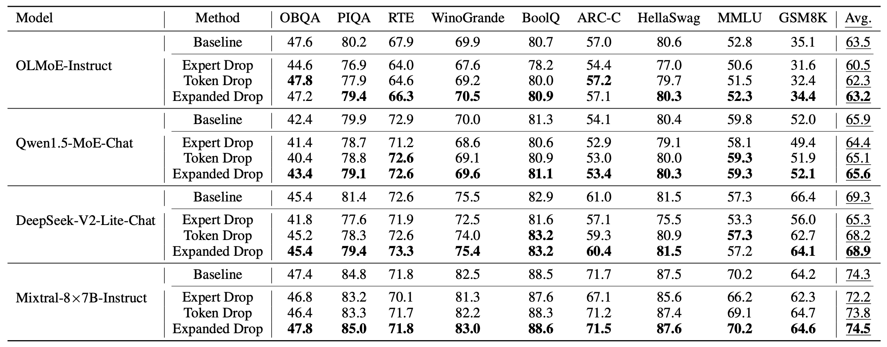
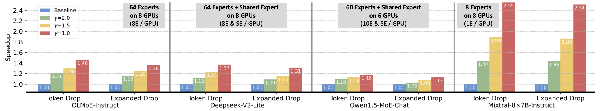
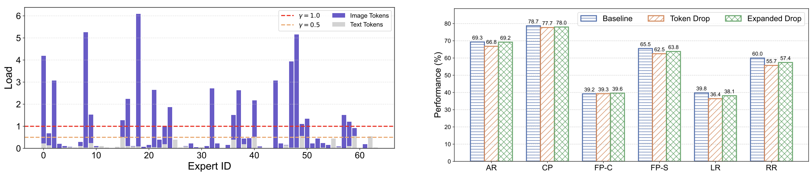

Capacity-Aware Token Drop
Bound each expert by capacity and drop overflow tokens routed to already overloaded experts.
Mitigating the straggler effect in sparse MoE inference by bounding overloaded experts at inference time, with no retraining.
Sparse MoE models activate only a subset of experts per token. Under expert parallelism, imbalanced routing can overload a few experts, and the full system waits for those stragglers to finish.
End-to-end latency is dominated by tail expert load. A small set of overloaded experts can erase the expected efficiency gains of sparse activation.

A few overloaded experts determine the global step time while other devices wait idle.
Capacity-Aware Inference regulates expert load through a capacity factor and then either drops overflow tokens or redirects candidates to underused local experts before dropping.

Bound each expert by capacity and drop overflow tokens routed to already overloaded experts.

Expand the candidate expert set toward low-load local experts first, then apply capacity constraints for a stronger throughput-quality tradeoff.
The reported experiments compare baseline routing, Token Drop, and Expanded Drop across language and multimodal MoE models.


Capacity-aware control reduces overloaded expert work across MoE layers.

The same inference-time idea transfers to multimodal MoE evaluation.
Set EXPERT_CAPACITY and STRATEGY in the evaluation scripts to choose the latency-quality operating point.
Lower capacity factors reduce overload more aggressively. Expanded Drop tends to use underloaded experts before removing routed tokens.
The repository includes modified Hugging Face MoE modeling files, language evaluation scripts, and a multimodal evaluation pipeline through VLMEvalKit.
conda create -n capacity-moe python=3.10 -y
conda activate capacity-moe
pip install -r requirements.txt
cd lm-evaluation-harness
bash runs_prune/eval_baseline.sh
bash runs_prune/eval_capacity.sh